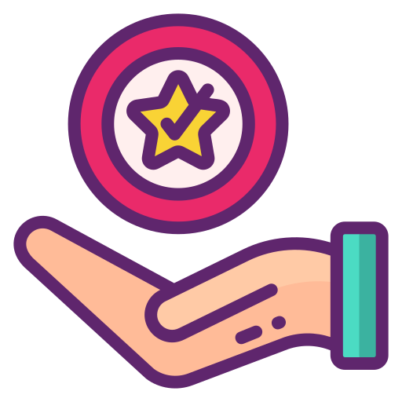

Hello
I’m a self-motivated IT professional with extensive engagement knowledge in areas such as software implementation, testing and business consulting.
Software Testing and QA

Strategy, planning and execution
Lead test consultant, able to manage and deliver testing projects.
Excels in devising test strategies, define the test approach, test estimation, test schedules and reporting

Business and technical coverage
Able to liaise with business stakeholders, project teams and service delivery partners to assist with the identification, documentation and validation of test requirements
Personal professional qualities
- Comprehensive knowledge and hands-on experience in all areas of the software development life cycle
- Lateral thinker and TEAM player with excellent interpersonal and communication skills, both verbal and written
- Flexible, with a great work ethic
- Results-orientated
- Strong organisational and methodical skills, with an eye for detail